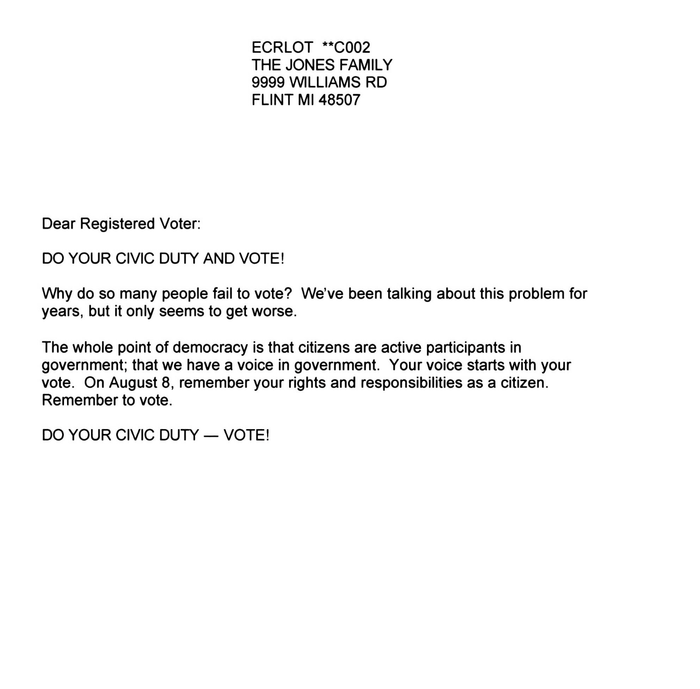
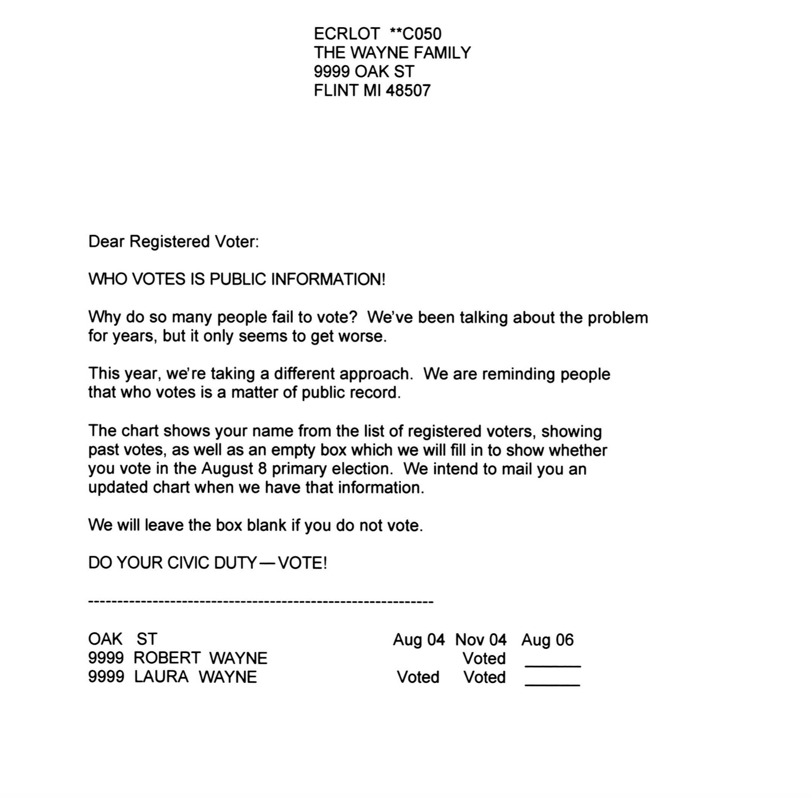
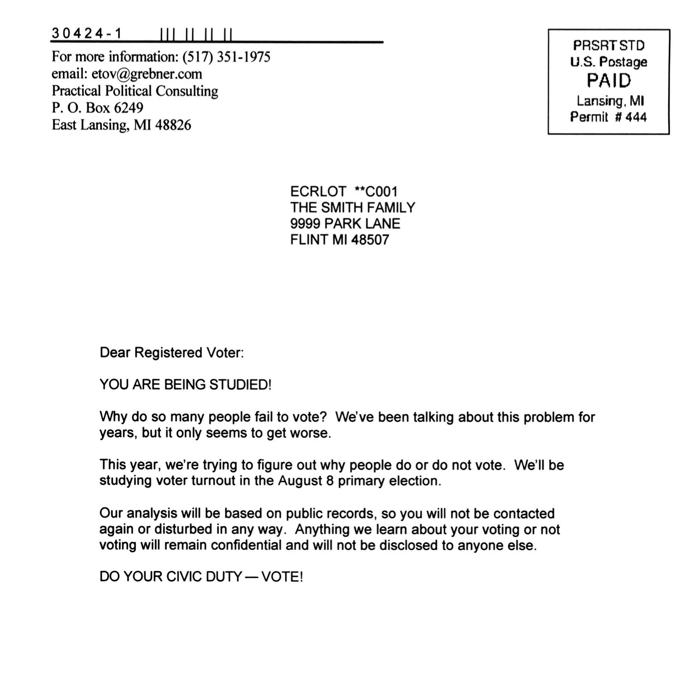
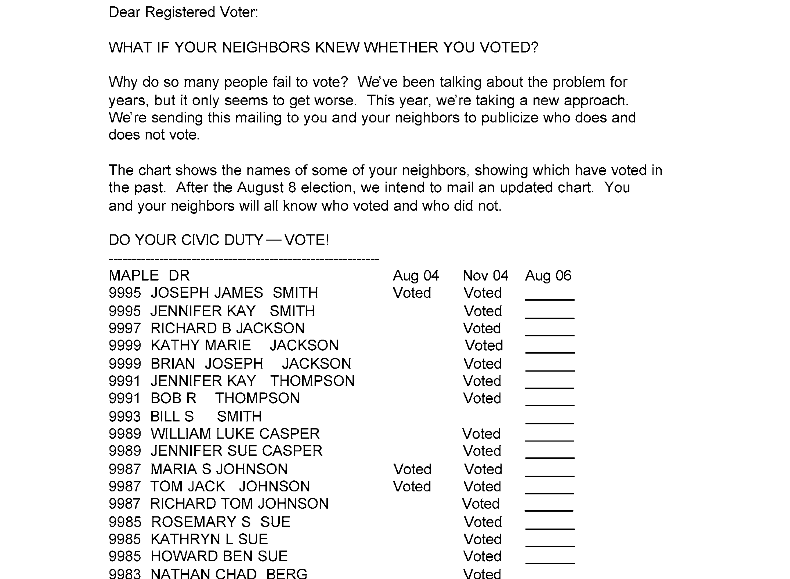

1 The Social Pressure Experiment
$$ \newcommand{X}{} \newcommand{Y}{} % A hex digit after # inside a macro body is eaten by build-time expansion, so digit-leading hexes spell # via .
$$
This Chapter and the Rest
In this chapter, we’ll introduce the main ideas we’ll cover in this course through the lens of a real study. We’ll touch on many concepts that we’ll explore in detail throughout the semester, just to give you a sense of the big picture and identify where we’ll start digging in.
As we work through our example today, you’ll notice that the process isn’t always smooth. We’ll take some wrong turns that we’ll need to back out of, and we’ll make some jumps that aren’t fully justified. This is intentional - I want to give you a sense of what it’s like to do this kind of work on your own. Most days in this class will be different; I’ll guide you through the material smoothly, and I’ve chosen topics that fit together well (that’s why we’re doing Trees and Forests at the end instead of Neural Nets, for example).
But today’s approach reflects an important truth about learning and doing this work: it’s not about following a recipe. While you can learn recipes, they don’t always work perfectly. Good bakers adjust for altitude and humidity, and similarly, you’ll need to adapt your approach to different situations. Others might not follow the same methods you know, and you’ll need to understand why things work (or don’t) to get consistent results and diagnose problems.
Learning is about trying things, seeing how they go, and understanding the underlying principles. While we can eventually write smooth explanations of why things work, that’s not how we get there. The process of getting there and writing those explanations are important skills that this class will help you develop. Even with guidance, it takes practice.
The Social Pressure Experiment
The Experiment

The Idea
In 2006, Gerber, Green, and Larimer ran an experiment in Michigan. They wanted to see what kinds of messages would get people to vote in the primary. So they wrote five letters exercising increasing levels of social pressure:
- No letter. This one was easier to write and cheaper to mail. Let’s still count it as ‘a letter’.
- A letter saying it was your civic duty to vote. Figure 3.1
- A letter saying that your vote is public record. Figure 3.2
- A letter saying that they’d be watching to see if you voted. Figure 3.3
- A letter saying that they’d tell your neighbors whether you voted. Figure 3.4
- This one was pretty intense. It included a list of your neighbors.
- And it told you whether they’d voted in the last couple elections.
The Experiment Details
Starting with the complete list of registered voters in Michigan …
- They randomly selected 180,000 households to include in their experiment.
- They randomly assigned each of these households one of five letters.
- They mailed the letters 11 days before the primary.
- Then they checked to see who voted.
We have that data. We’re looking at some of it. We’re looking at the people in the households sent either no letter or the neighbors letter. We’ve got a dot for each one— 229444 dots in all.1 What does a person’s dot look like?
- Their current age determines where it is on the x-axis.
- It’s a ▲ if they voted in the 2002 primary and a ● if they didn’t.
- It’s green if they got the neighbors letter and red if they got no letter.
- Its location on the y-axis indicates whether they voted in the 2006 primary.
- Yeses in the top row; nos on the bottom.
Flip to the “With Frequencies Drawn In” tab to see the fraction of Yeses within each group shown as a bigger dot. For example, in the green column at age 27, the big dot is at about 0.3, meaning about 30% of the people who got the letter at age 27 voted.
Making Predictions
Let’s consider a practical scenario. Suppose you work on a political campaign where your candidate lost by a small margin. You learn about this experiment and wonder if sending out high-pressure letters (like the neighbors letter) might have helped you win. Of course, you would only send these letters to people you’re confident would vote for your candidate, and you’d do it anonymously to avoid influencing how people vote.
Let’s make this more concrete. Suppose people aged 25-35 are extremely likely to vote for your candidate — they would vote for your candidate every time they vote. The challenge is that many of them don’t vote in mid-term primaries. You know how many of them actually voted (this is public record), but you need to know how many would have voted if they had received the neighbors letter. The difference between these numbers would tell you how many additional votes your imaginary mailer campaign might have generated.
Let’s start by trying to predict turnout for individual people. Consider two voters from your list:
| Name | Age | Voted 2002 | Voted 2006 | if sent letter |
|---|---|---|---|---|
| Rush Hoogendyk | 27 | ▲ Yes | No | ? |
| Mitt DeVos | 31 | ● No | No | ? |
How do you think Rush and Mitt would have voted if they’d gotten the neighbors letter? Look at Figure 2.1. Hint. What information do you have to help you guess?
My guess is that neither would have voted. Letter or no, very few people did.
To be more precise, let’s look at the people who got the letter with features matching Rush and Mitt in Figure 2.1.
- Rush-types are ▲s in the x=27 column. 23/70 voted. 33%.
- Mitt-types are ●s in the x=31 column. 52/169 voted. 31%.
Looking at rates within-group like this doesn’t change our conclusion. People like Rush and Mitt, like most people outright, tended not to vote.
Now that we’ve worked out how to make predictions for Rush and Mitt, we can do it for everyone in our list. That is, we can fill in all the ?s in our table below. I did one more.
| Name | Age | Voted 2002 | Voted 2006 | if sent letter |
|---|---|---|---|---|
| Rush | 27 | ▲ Yes | No | No (33% of Rush-types voted) |
| Mitt | 31 | ● No | No | No (31% of Mitt-types voted) |
| Al | 34 | ● No | No | No (47% of Al-types voted) |
| … | … | … | … | ? |
Note that the frequencies in the table above are based on all data from the experiment, not just the dots shown. But we get the same conclusion if we use only the dots we’re displaying.
- 3/9 (33%) of the displayed Rush-types voted
- 4/12 (33%) of the displayed Mitt-types voted
Predicting Summaries
There’s not a whole lot we can do with this answer. We want to know how many votes we’d have gotten if we mailed everyone in this table the letter. How could we use Table 2.1 to find out?
One approach is to just count up the number of predicted Yeses in the last column of our table. It turns out that doesn’t work. We were choosing Yes/No by majority rule, but the majority within almost every group is No. To see this, we can look at the frequency of “Yes” votes within each age group shown in Figure 2.2. If we think of “Yes” as 1 and “No” as 0, majority rule would say “No” if the fraction is below the midline. For people in our target age group (25-35), the majority says “No” in almost every group: 21/22 of the groups.
Let’s do better. We’re still going to count. But this time, we’re not going to think of Rush, Mitt, and Al as 3 Nos. We’re going to think of Rush as 33% of a Yes; Mitt as 31% of a Yes; and Al as 47% of a Yes. Even though the thing we’re predicting is binary, our prediction is a fraction. This sounds a bit odd but the math tends to work out. That way, if we counted up our predictions for 100 people like Rush, we get 32.86 Yeses. Not zero. Some people call this kind of fractional answer to a Yes/No question probabilistic classification.
But we don’t have 100 people like Rush (●s in the x=27 column). We have 1590 of them. So when we count the number of predicted Yeses in this group, we get 1590 \times 0.33 = 522.43. We can repeat this process to predict the number of Yeses we’d get if we didn’t mail the letter to anyone: it’s 1590 \times 0.28 = 451.22. We can think of the difference between these two numbers as the effect of mailing the letter to people like Rush. Roughly 71 more Yeses.
Repeating that process for every group in our target age range of 25-35, we predict an increase in this group’s turnout rate from 24% to 30% which would give us a total of roughly 1667 more Yeses. Not bad!
Statistical Inference
We’ve predicted that the letter makes a big difference, but that alone isn’t particularly interesting. It’s only interesting if our prediction is accurate, i.e. if mailing the letter would really turnout would really increase turnout from 24% to 30%. What’s particularly challenging here is that we’re asking about what would have happened if we’d done something we didn’t do.
We call a one-number prediction like 30% a point estimate. But there are other kinds of estimates we can use to tell us a bit more about our prediction’s accuracy. The simplest is an interval estimate: a range of values that we’re fairly confident that the true value is in.
Point Estimates

Interval Estimates

Simulated Samples

Our Estimate’s Distribution

What’s this confidence actually based on? Let’s imagine we actually did mail the letter to every Michigan voter in our age range, and the data we’ve based our predictions on (the green dots in Figure 2.1) is just a random sample of these voters. If this were the case, we’d be dealing with a statistical inference problem. We’d want to know how the turnout rate we’ve estimated using our random sample compares to the rate in the population.
We can think of our estimate as the result of a procedure we could apply to any sample. If we applied this procedure to 100 different samples, we’d get 100 different numbers. While we don’t have multiple samples (we’d need to time-travel to 2006 and mail letters multiple times), we can simulate this process to get a sense of the uncertainty in our estimates. And by simulating it over and over, we can get a sense of our estimate’s probability distribution.
Causality
Now let’s return to the issue we set aside earlier. We’ve been talking as if we’d mailed the letter to every voter in Michigan and were using a random sample of them to make our predictions. But that’s not what happened. Gerber, Green, and Larimer didn’t mail the letter to every voter in Michigan. Instead, they:
- Randomly selected 180,000 households to include in their experiment
- Randomly assigned each of these households one of five letters

The key question is whether the sample we got looks like one we’d get if we’d mailed the letter to everyone. Is it similar enough that we can get away with pretending that it is? That’s a question we’ll explore in detail using mathematical tools to think about sampling and randomization.
Appendix
Terminology
The Letters




We’re not actually showing a dot for each person. To make the visualization manageable for your browser, we’re randomly selecting 10% of the data points to display.↩︎